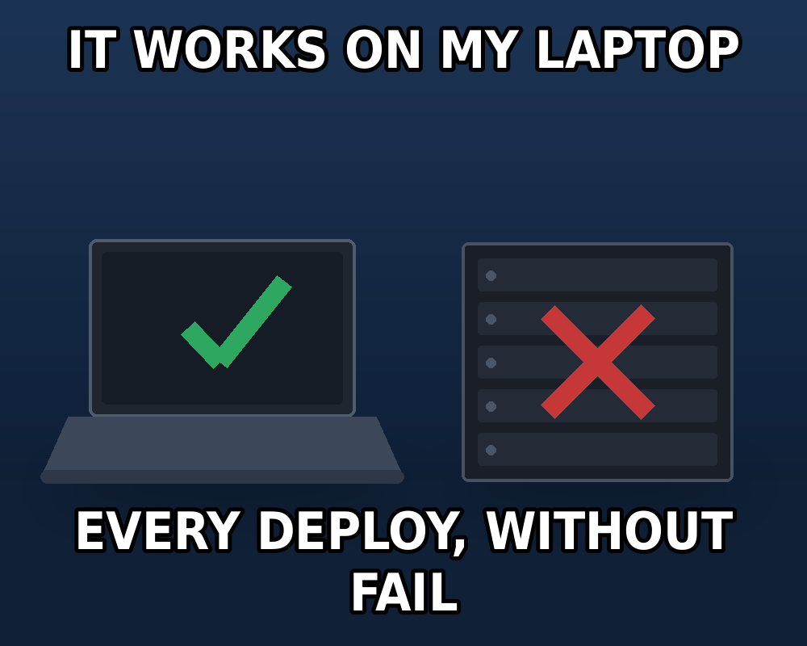
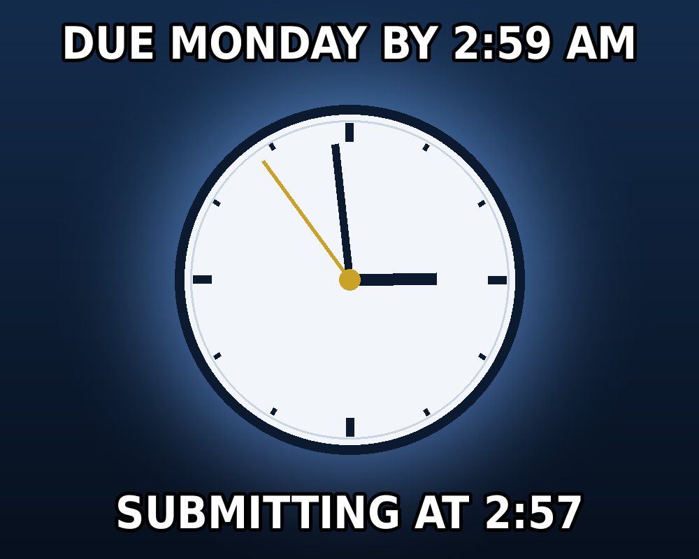
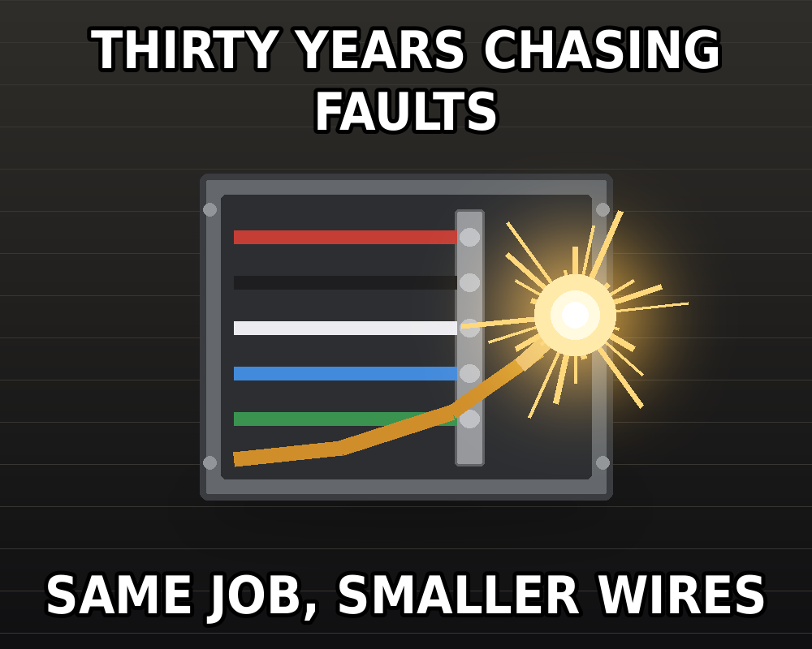

Meme Wall
Three originals, made for this project. Thirty years chasing faults in conduit, now chasing them in JavaScript. Same job, smaller wires.
All three

Every deploy, without fail.

The UAT deadline, respected precisely.

It is always the one connection you did not check.